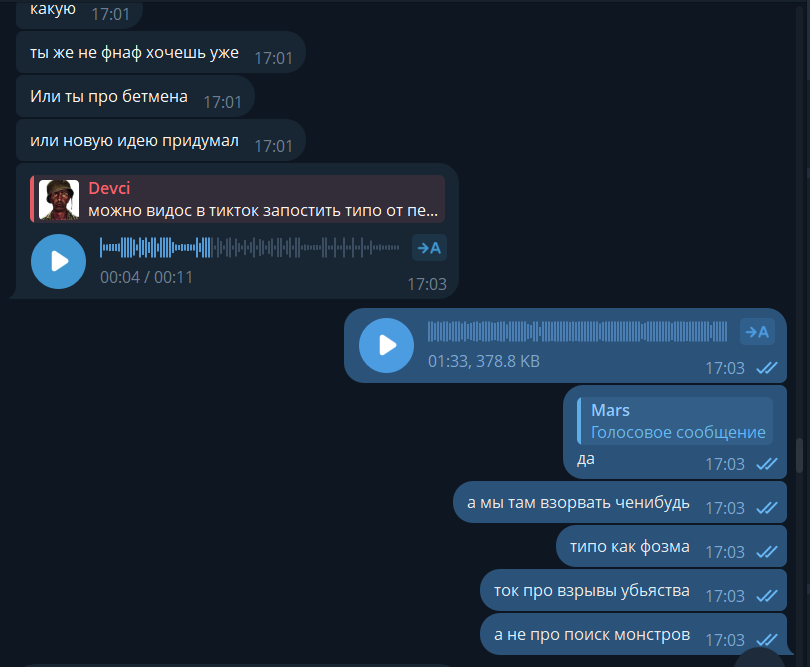
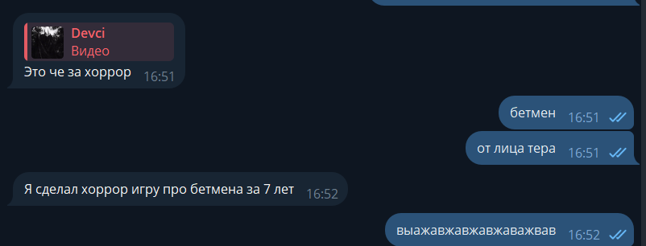
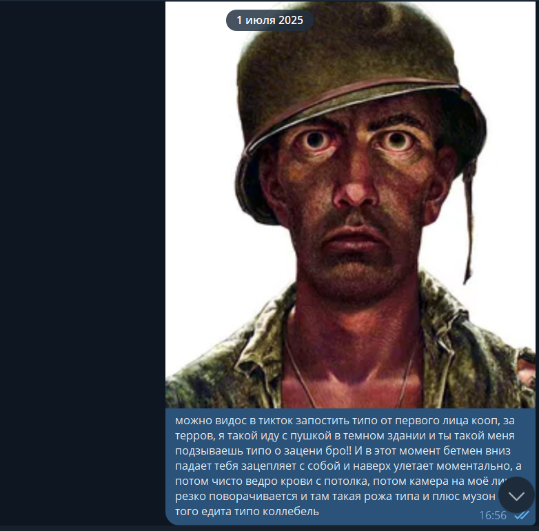
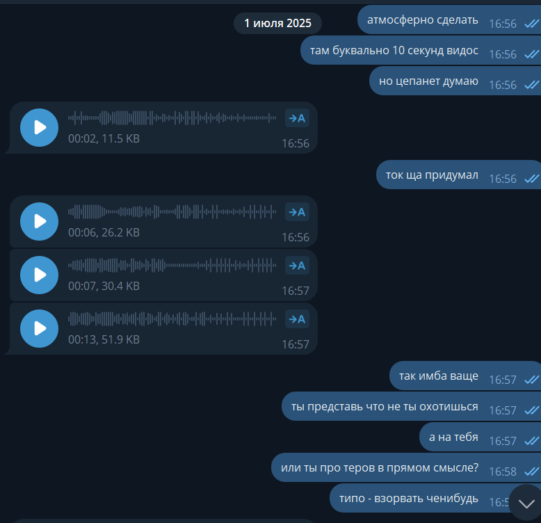
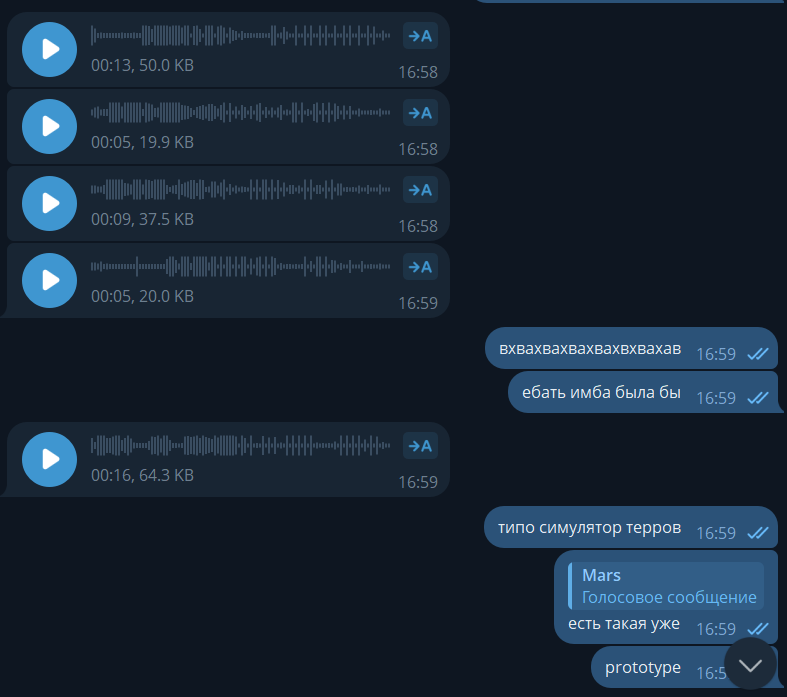
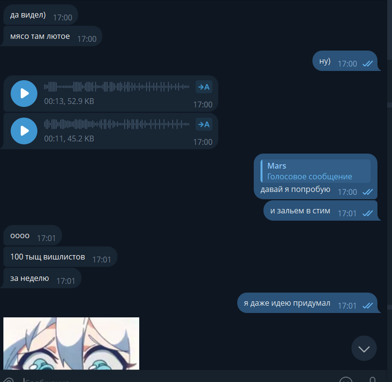
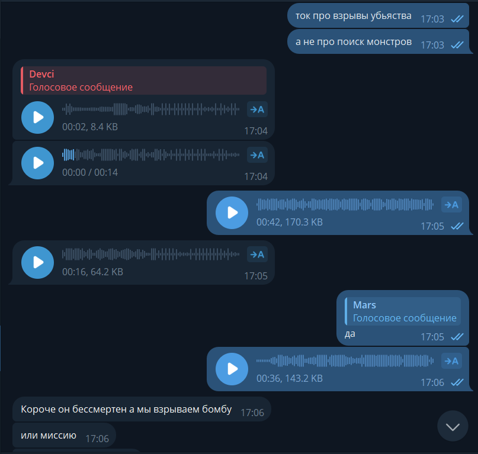
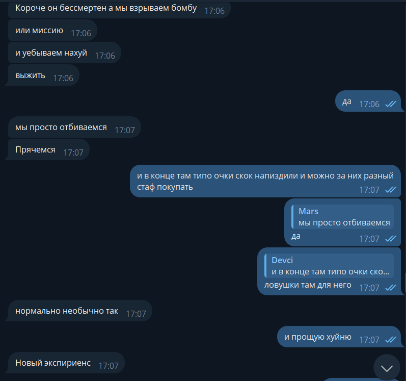

ФИКСИРОВАТЬ
Ядро P.O.N. — кооп-ограбление/грязная миссия, где команда не охотится, а сама становится добычей для почти неубиваемой тени.
P.O.N. / история создания / внутренняя страница доказательств
Эта страница собирает первые сообщения, войсы и скриншоты в один хронологический плеер. Слева в Telegram — Mars, справа — Devci. Все выводы ниже являются внутренним производственным контекстом: публично бэтмен-подобный референс не называть.

Сжатый вывод для Vision Doc
Ядро P.O.N. — кооп-ограбление/грязная миссия, где команда не охотится, а сама становится добычей для почти неубиваемой тени.
Batman, прямая террористическая фантазия, заложники и минирование как маркетинговый центр. Это внутренний сырой слой, а не публичный текст.
Постановочный геймплей / вирусный трейлер как быстрая проверка, игровой цикл как Lethal Company/Phasmophobia, но с давлением ограбления и Nightmare как режиссером угрозы.
16:51-16:52 · завязка
Devci отправляет видео и сразу сжимает мысль до формулы: бэтмен-подобный хоррор не от лица героя, а от лица того, на кого он охотится.
Это че за хоррор
бетмен
от лица тера
Я сделал хоррор игру про бетмена за 7 лет

16:55-16:57 · первый формат
Появляется конкретная постановка короткого ролика: игрок видит напарника, сверху падает тень, камера резко дергается, остается кровь. Смысл — мгновенно продать ощущение угрозы.
Можно запустить видос в TikTok от первого лица в коопе: ты идешь, я такой иду с пушкой, ты показываешь, я поворачиваюсь — сверху падает Batman-like тень и утаскивает.
атмосферно сделать
там буквально 10 секунд видос
ты представь что не ты охотишься, а на тебя
Короткий уточняющий войс по отправленному видео: это найденный референс или уже собранный/скопированный кусок.
Mars ловит общий инфополе-момент: похожая тема уже крутилась в голове после просмотра кино и референсов.
Сырой фрагмент размышления про насилие, перевозку/рейд и атмосферу угрозы; распознавание неточное.
Идея смены стороны: не играть за «добрых», а смотреть на ситуацию глазами антагонистов. Прямой терроризм сразу отмечен как слишком жесткий и рискованный; грабители безопаснее как рамка.


16:58-16:59 · отсечение лишнего
Команда находит границу: «антагонисты» как мысль работает, но прямой терроризм, заложники и минирование нельзя ставить в публичный центр P.O.N.
ебать имба была бы
типо симулятор терров
есть такая уже / prototype
Формула «Ready or Not, но от лица противоположной стороны»: не спецназ, а люди внутри операции.
Перечень тем, которые всплывают в сырой версии: заложники, бомбы, минирование, захват. Это нужно держать как внутренний черновик, не как публичное позиционирование.
Mars сам отсекает прямой terror angle: плохо для цензуры, легко забанить, тема слишком токсичная.
Уточнение: если делать подобный fantasy, его надо уводить в более стилизованную, менее реалистичную сторону.
Проверка крайних вариантов: играть за убийцу, монстра или разрушителя. Вывод: это не тот безопасный и чистый framing, который нужен P.O.N.

17:00-17:01 · валидация
Mars предлагает не тонуть в прототипе, а сначала собрать фейковый трейлер или постановочный геймплей, который выглядит как сильная игра и проверяет реакцию.
мясо там лютое
ну)
давай я попробую
и зальем в стим
100 тыс вишлистов за неделю
я даже идею придумал
Mars предлагает сначала не прототип, а fake trailer: быстро визуализировать ощущение и проверить реакцию.
Рабочий метод для любой новой игры: fake gameplay, fake screenshots, trailer-like proof вместо долгого прототипа вслепую.

17:03 · ядро
Здесь появляется главный каркас: игроки — не герои, а crew внутри темного объекта; преследователь работает как режиссер ужаса, который давит, отнимает людей и превращает кооп в панику.
Или ты про бетмена / или новую идею придумал
а мы там взорвать чейнибудь / типо как фазма / ток про взрывы, убийства, а не про поиск монстров
Ключевой вопрос Mars: если игроки — бандиты, а бэтмен-подобная фигура работает как режиссер давления, какая цель игры и что игроки должны делать.
Devci формулирует ядро: кооп в темноте, игроки как преступники/воришки, эхом слышно помещение, внезапная тень утаскивает напарника, появляется ведро крови. Для игроков преследователь не герой, а монстр/демон. Публично Batman не упоминается, но внутренний референс понятен.
17:04-17:06 · loop
Mars требует понятную цель игры. Devci переводит вайб в loop: команда входит, выполняет задачу, может отпугивать Nightmare, но не убивает его. Победа — миссия плюс выход живыми.
Короче он бессмертен, а мы взрываем бомбу или миссию и уебываем. Выжить.
Mars просит описать это уже от геймплея, а не только от вайба.
Mars уточняет цель: захват здания, бомба или другой objective; по сути вопрос о win condition.
Devci раскладывает mission loop: команда входит в здание, заранее смотрит план, должна что-то установить, взломать, украсть, ограбить банк или выполнить грязную работу. Nightmare мешает все время; оружием его можно только спугнуть, а не победить.
Mars добивает вопрос цели: нужно ли убить преследователя, взорвать здание, выполнить миссию или просто выжить.
Devci фиксирует правильную структуру: как в Lethal Company/Phasmophobia, монстра нельзя убить; нужно выполнить миссию и выбраться. В конце — очки/результат, прогрессия и покупка стаффа.

17:06-17:07 · прогрессия
После loop появляется мета-структура: игроки отбиваются, прячутся, получают очки за выполненное и могут покупать стафф/ловушки для следующих заходов.
мы просто отбиваемся / прячемся
в конце очки, за них разный стафф покупать
ловушки там для него
нормально необычно так / Новый экспириенс

Доказательная карта
| Дата/время из файла | Тип | Оригинальное имя | Копия на сайте |
|---|---|---|---|
| 2026-05-25T18:22:33 | .mp4 | IMG_8073.MP4 | открыть |
| 2026-05-25T18:22:57 | .png | Снимок экрана 2026-05-25 182257.png | открыть |
| 2026-05-25T18:23:27 | .png | Снимок экрана 2026-05-25 182327.png | открыть |
| 2026-05-25T18:24:10 | .png | Снимок экрана 2026-05-25 182410.png | открыть |
| 2026-05-25T18:26:50 | .ogg | audio_2026-05-25_18-26-50.ogg | открыть |
| 2026-05-25T18:26:53 | .ogg | audio_2026-05-25_18-26-53.ogg | открыть |
| 2026-05-25T18:26:56 | .ogg | audio_2026-05-25_18-26-56.ogg | открыть |
| 2026-05-25T18:26:58 | .ogg | audio_2026-05-25_18-26-58.ogg | открыть |
| 2026-05-25T18:28:44 | .png | Снимок экрана 2026-05-25 182844.png | открыть |
| 2026-05-25T18:29:15 | .ogg | audio_2026-05-25_18-29-15.ogg | открыть |
| 2026-05-25T18:29:19 | .ogg | audio_2026-05-25_18-29-19.ogg | открыть |
| 2026-05-25T18:29:22 | .ogg | audio_2026-05-25_18-29-22.ogg | открыть |
| 2026-05-25T18:29:26 | .ogg | audio_2026-05-25_18-29-26.ogg | открыть |
| 2026-05-25T18:29:29 | .ogg | audio_2026-05-25_18-29-29.ogg | открыть |
| 2026-05-25T18:33:50 | .png | Снимок экрана 2026-05-25 183350.png | открыть |
| 2026-05-25T18:34:13 | .ogg | audio_2026-05-25_18-34-13.ogg | открыть |
| 2026-05-25T18:34:16 | .ogg | audio_2026-05-25_18-34-16.ogg | открыть |
| 2026-05-25T18:34:30 | .png | Снимок экрана 2026-05-25 183430.png | открыть |
| 2026-05-25T18:34:42 | .ogg | audio_2026-05-25_18-34-42.ogg | открыть |
| 2026-05-25T18:34:44 | .ogg | audio_2026-05-25_18-34-44.ogg | открыть |
| 2026-05-25T18:35:00 | .png | Снимок экрана 2026-05-25 183500.png | открыть |
| 2026-05-25T18:35:16 | .ogg | audio_2026-05-25_18-35-16.ogg | открыть |
| 2026-05-25T18:35:19 | .ogg | audio_2026-05-25_18-35-19.ogg | открыть |
| 2026-05-25T18:35:21 | .ogg | audio_2026-05-25_18-35-21.ogg | открыть |
| 2026-05-25T18:35:24 | .ogg | audio_2026-05-25_18-35-24.ogg | открыть |
| 2026-05-25T18:35:27 | .ogg | audio_2026-05-25_18-35-27.ogg | открыть |
| 2026-05-25T18:35:37 | .png | Снимок экрана 2026-05-25 183537.png | открыть |